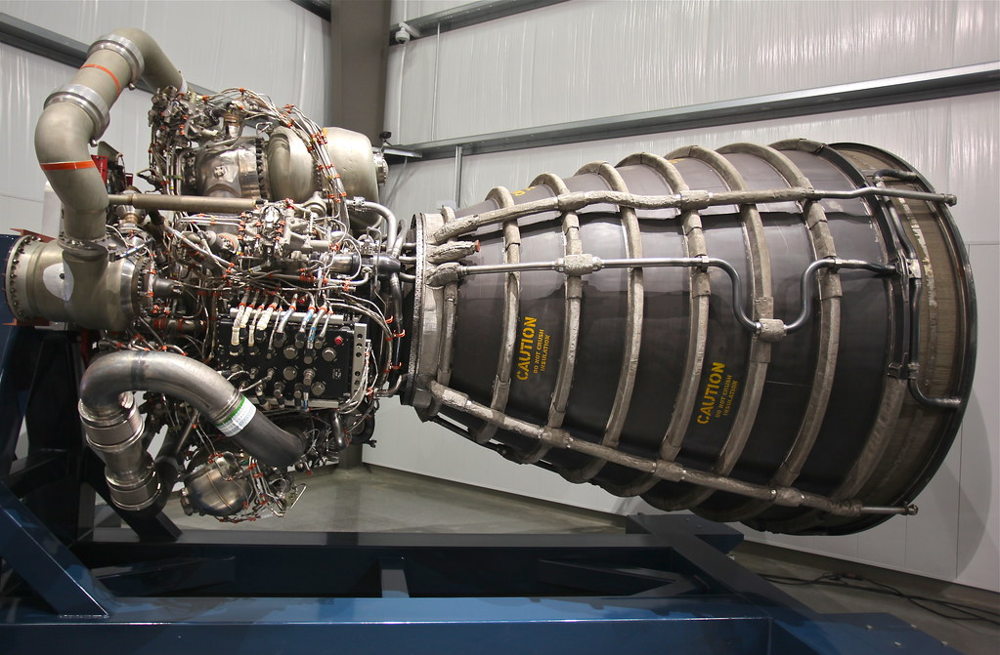
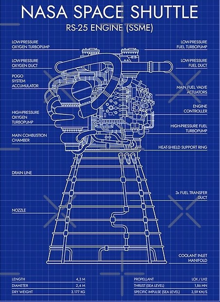

De RS-25 is een vloeibarebrandstofraketmotor die als brandstof vloeibare waterstof en als oxidator vloeibare zuurstof gebruikt. Eerder stond de RS-25 vooral bekend als de Space Shuttle Main Engines (SSME's, vrij vertaald: hoofdmotoren van het ruimteveer) De RS-25 werd door Rocketdyne (nu Aerojet Rocketdyne) gefabriceerd, en gedurende 30 jaar zaten er drie RS-25 motoren op de Space Shuttles als herbruikbare hoofdmotoren. 16 van de 19 overgebleven RS-25 mototren uit het Spaceshuttleprogramma zijn na beëindiging van het programma aangepast om als eenmalig bruikbare hoofdmotoren van het Space Launch System, dat er vier stuks per vlucht gebruikt, te functioneren. En een nieuwe uitvoering voor wanneer deze zijn opgebruikt is in ontwikkeling.
Bij de ontbranding van deze (en andere) raketmotoren ontstaat heel veel warmte, zoveel warmte dat de
mantel van de motor indien niet gekoeld in twee seconden weggesmolten zou zijn. hierom lopen door de mantel honderden kleine leidingen waar de vloeibare zuurstof doorheen
loopt voordat het naar de ontbrandingskamer gaat. doordat de druk hierin afneemt komt er veel kou vrij die gebruikt wodt om de mantel te koelen.
In november 2015 heeft NASA Aerojet-Rocketdyne gecontracteerd voor de ontwikkeling van een RS-25 voor eenmalig gebruik. Deze motoren moeten na 4 SLS missies (wanneer 16 van de 19 RS-25D's zijn gebruikt) ingezet kunnen worden. Ze moeten vanaf 2024 beschikbaar zijn. Deze nieuwe RS-25E moet minder onderdelen en lasnaden bevatten en met behulp van moderne technieken, zoals 3D-printen en digitale röntgenfotografie, goedkoper vervaardigd worden.[4] Op 13 december 2017 onderwierpen NASA en Aerojet-Rocketdyne voor het eerst een RS-25 met een nieuwe 3D-geprinte pogo-accumulator voor de RS-25E erin aan een “full duration hot-fire-test”. Deze duurde door een probleem met de “test-stand” 70 seconden korter dan gepland maar desondanks werden alle doelen behaald. Als de RS-25E klaar voor gebruik is zal worden gewerkt aan een goedkoper te produceren variant die RS-25F zal heten. Op 1 mei 2020 maakte NASA bekend 18 nieuwe RS-25’s te hebben besteld. Deze kunnen met een kosten reductie van dertig procent worden vervaardigd. Eerder waren er al zes stuks besteld. Voor deze 24 motoren krijgt Aerojet Rocketdyne 3,5 miljard dollar.